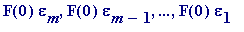
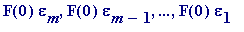
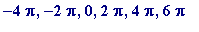

Hermite (1822-1901) (
e
) and Lindemann (1852-1939) (
 )
)
While it is true that Liouville gave, with proof (how else!), the first examples of transcendental numbers, it would - I believe - be generally accepted that the first example of a seriously beautiful transcendental number is due to Charles Hermite, with his proof of the transcendence of e , in 1873. (One can only imagine how delighted he must have felt to know , with complete certainty (in so far as such a thing exists), that Euler's number, e , is not a solution of any polynomial equation with integer coefficients, with non-zero leading coefficient.)
His proof is actually quite simple from a technical point of view (it only required genius to frame it!), and can be easily followed. Here I present only the ideas behind his proof (the interested reader may follow the complete details by reading elsewhere, or in my Manchester 1972-1973 notes when I eventually put them up at my web site).
Basic idea of Hermite's proof of the transcendence of e . Suppose that e is algebraic. Then
... (i)
for some integers , with .
Hermite's idea was to replace every power of e in (i) with simultaneous rational approximations (meaning they have the same denominator) of a very special kind ; he showed how to construct single-variable rational number approximations (with increasingly large common denominator ) to the numbers , such that (i) became
namely
+
... (ii)
Hermite was able to arrange the rational approximations in such a way that not only are all the epsilons
small
, and become increasingly smaller as F(0) is made increasingly large (in itself that is an entirely trivial matter in a general setting: choose
any
m
real numbers
, and
any
denominator
q
(and think of
q
as being made larger and larger), then each of those
 's is either a rational number with denominator
q
, or lies between two consecutive rational numbers with denominator
q
. Thus there are rational numbers
's is either a rational number with denominator
q
, or lies between two consecutive rational numbers with denominator
q
. Thus there are rational numbers
 that are simultaneous rational approximations to
that are simultaneous rational approximations to
 , with, in each case, an error term at most
), but
so small
that
every one
of

is
small
, and become increasingly smaller as F(0) is made increasingly large.
, with, in each case, an error term at most
), but
so small
that
every one
of

is
small
, and become increasingly smaller as F(0) is made increasingly large.
You should now
see
how (ii)
reads
: it looks like (an integer, which varies) + (something small, that's getting smaller) = 0. That, however, would be impossible
if only
one could arrange matters so that the 'integer' is non-zero. In short, that's what Hermite did, but it in a quite complicated way... It was greatly simplified (by Klein?) with an
ad hoc
piece of trickery: arrange for (
 )
)
to be non-zero by choosing a prime number p that does not divide , and arrange the approximations such that p does not divide the denominator F(0), but does divide every one of the numerators .
A novice reader should seek out the actual detailed proof. Some versions are not for the faint hearted; the one I first read in Hardy & Wright is quite frightful, and certainly does not aim to enlighten. My own recollection of understanding the proof for the first time was reading my school-bought copy of Felix Klein's (Dover edition, which I've lost) Arithmetic ; that doesn't seem to be available anymore. I had hoped to type up my Manchester hand-written notes in time for this talk, but that will have to wait. Interested readers ought to find they follow the proof I gave there.
_________
 is so well known to everyone that it would not be sensible for me to write about it here. The following are classic, and well known: area of a circle (
), circumference of a circle (
), volume of a sphere
is so well known to everyone that it would not be sensible for me to write about it here. The following are classic, and well known: area of a circle (
), circumference of a circle (
), volume of a sphere
( ), surface area of a sphere ( ), etc
- := + ... , equals , as was first proved by Euler.
>
restart;
sum(1/n^2, n = 1..infinity);
>
If you aren't familiar with what a CAS - like Maple - can do, I hope you are impressed with that last evaluation!
-
the probability (properly defined) that two random integers have greatest common divisor equal to 1 is
(related to the previous infinite sum) -
the zeroes of the function of a
complex
variable sin(
z
), with infinite series expansion
 + ...
+ ...
are ...  , ...
The great Siegel began his classic 1949 Princeton University Press on Transcendental Numbers by writing
The most widely known result on transcendental numbers is the transcendency of
 proved by Lindemann in 1882.
proved by Lindemann in 1882.
If one is acquainted with the classic Greek ruler-and-compass construction problems (sadly not a topic that our modern school pupils are exposed to...) of the duplication of the cube, the trisection of a general angle, and the squaring of the circle, then one will know that a solution of the latter reduces to knowing whether or not
 is not just algebraic, but is algebraic of a very particular kind...
is not just algebraic, but is algebraic of a very particular kind...
I think I should be frank and admit that there is no easy proof that
 is transcendental. I did include a fairly clear proof of it in my Manchester 1972-73 course, and hope in time to put it up in the transcendental numbers corner of my web site. I will merely record that the honour of first proving its transcendence goes to Lindemann (1882), and recommend that interested readers consider obtaining a copy of the delightful
Pi
: A Source Book
(see References).
is transcendental. I did include a fairly clear proof of it in my Manchester 1972-73 course, and hope in time to put it up in the transcendental numbers corner of my web site. I will merely record that the honour of first proving its transcendence goes to Lindemann (1882), and recommend that interested readers consider obtaining a copy of the delightful
Pi
: A Source Book
(see References).